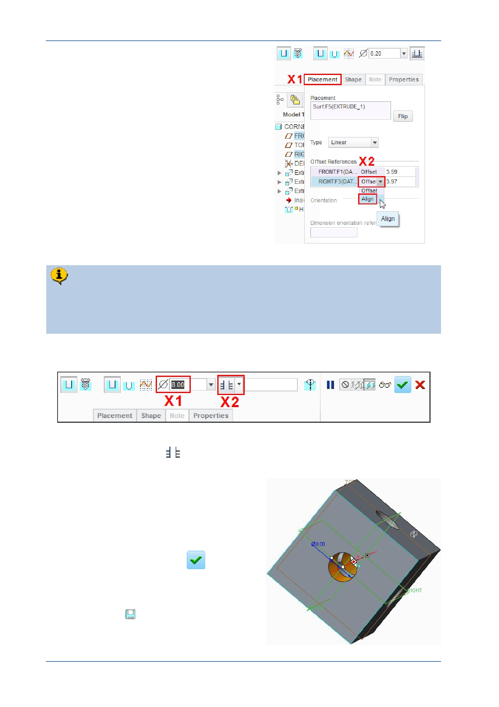

PTC Academic Program
Open the Placement tab from the
bottom-left of the dashboard X1 .
In the Offset References section of the
Placement tab X2 , click Offset from
one of the references and select Align
from the drop down menu.
Edit the other Offset reference to also
be Align .
Click on the Placement tab to close it.
Notice that because the center of the hole is now aligned to the FRONT and
RIGHT datum planes, the offset dimensions have been removed.
You will now use the dashboard to define the diameter and depth of the hole.
6. Defining the diameter and depth for the hole in the dashboard:
Edit the hole diameter X1 to be 8 and press ENTER .
Select Through All
X2 from the depth drop-down menu, so that the hole will
intersect the entire model.
You have completed the definition of an 8 mm
thru hole; located at the center of the cube.
Spin the model to see that the hole
intersects the entire model.
Click Complete Feature
.
7. Saving your work:
Click Save
.
© 2012 PTC
Creo Parametric 2.0 Primer
Page 36